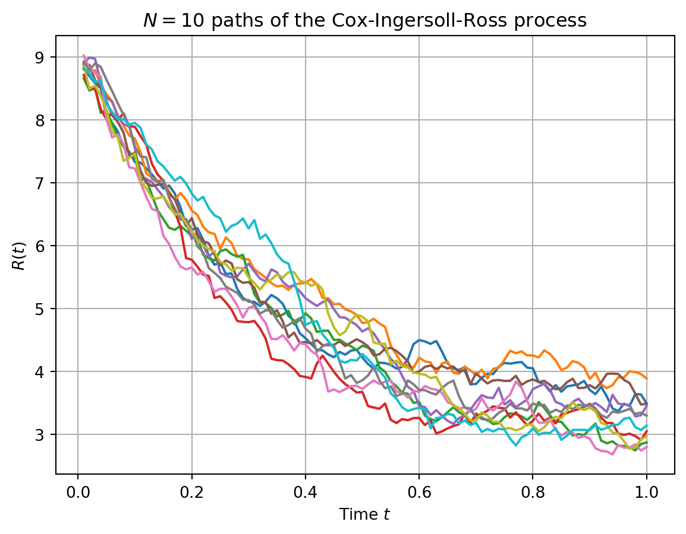
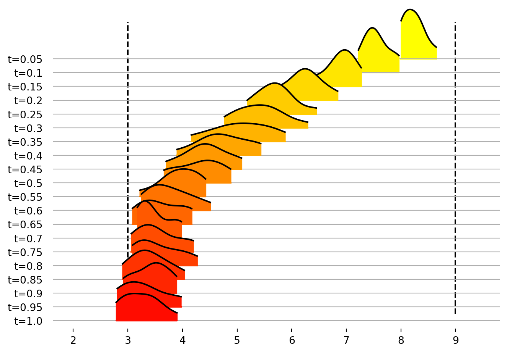

import math
from dataclasses import dataclass
import joypy
import matplotlib.pyplot as plt
import numpy as np
import pandas as pd
from matplotlib import cm
from tqdm import tqdm
@dataclass
class CIRProcess:
"""An engine for generating sample paths of the Cox-Ingersoll-Ross process"""
kappa: float
theta: float
sigma: float
step_size: float
total_time: float
r_0: float
def generate_paths(self, paths: int):
"""Generate sample paths"""
num_steps = int(self.total_time / self.step_size)
dz = np.random.standard_normal((paths, num_steps))
r_t = np.zeros((paths, num_steps))
zero_vector = np.full(paths, self.r_0)
prev_r = zero_vector
for i in range(num_steps):
r_t[:, i] = (
prev_r
+ self.kappa * np.subtract(self.theta, prev_r) * self.step_size
+ self.sigma
* np.sqrt(np.abs(prev_r))
* math.sqrt(self.step_size)
* dz[:, i]
)
prev_r = r_t[:, i]
return r_tShort rate dynamics: mean and variance
The short rate under the CIR model has the dynamics:
\[dr_t = \kappa (\theta - r_t)dt + \sigma \sqrt{r_t}dB_t\]
For a moment, if we drop the stochastic term, and merely consider the first order linear ODE \(\frac{dr_t}{dt} + \kappa r_t = \kappa \theta\), the integrating factor for this differential equation is \(e^{\int \kappa dt} = e^{\kappa t}\). Multiplying both sides by the integrating factor, we have:
\[\begin{align*} e^{\kappa t} dr_t &= \kappa(\theta - r_t) e^{\kappa t}dt + \sigma e^{\kappa t}\sqrt{r_t} dB_t \\ e^{\kappa t} dr_t + r_t e^{\kappa t}dt &= \kappa e^{\kappa t}\theta dt + \sigma e^{\kappa t}\sqrt{r_t} dB_t \\ d(e^{\kappa t} r_t) &= \kappa e^{\kappa t}\theta dt + \sigma e^{\kappa t}\sqrt{r_t} dB_t \\ \int_{0}^{t} d(e^{\kappa s} r_s) &= \theta \kappa\int_{0}^{t} e^{\kappa s} ds + \sigma \int_{0}^{t} e^{\kappa s}\sqrt{r_s} dB_s \\ [e^{\kappa s} r_s]_{0}^{t} &= \kappa \theta \left[\frac{e^{\kappa s}}{\kappa}\right]_{0}^{t} + \sigma \int_{0}^{t} e^{\kappa s}\sqrt{r_s} dB_s\\ e^{\kappa t}r_t - r_0 &= \theta (e^{\kappa t} - 1) + \sigma \int_{0}^{t} e^{\kappa s}\sqrt{r_s} dB_s \\ e^{\kappa t} r_t &= r_0 + \theta (e^{\kappa t} - 1) + \sigma \int_{0}^{t} e^{\kappa s}\sqrt{r_s} dB_s \\ r_t &= r_0 e^{-\kappa t} + \theta (1 - e^{-\kappa t}) + \sigma \int_{0}^{t} e^{-\kappa (t-s)}\sqrt{r_s} dB_s \end{align*}\]
The mean is given by:
\[\begin{align*} \mathbf{E}[r_t] &= r_0 e^{-\kappa t} + \theta (1 - e^{-\kappa t}) \end{align*}\]
The random variable \(\sigma \int_{0}^{t} e^{-\kappa (t-s)}\sqrt{r_s} dB_s\) has mean \(0\) and variance:
\[\begin{align*} \mathbf{E}\left[\left(\sigma \int_{0}^{t} e^{-\kappa (t-s)}\sqrt{r_s} dB_s\right)^2\right] &= \sigma^2 \int_{0}^{t}e^{-2\kappa(t-s)} \mathbf{E}[r_s] ds \\ &= \sigma^2 e^{-2\kappa t}\int_{0}^{t}e^{2\kappa s} \left(r_0 e^{-\kappa s} + \theta(1-e^{-\kappa s})\right) ds\\ &= \sigma^2 r_0 e^{-2\kappa t} \int_{0}^{t} e^{\kappa s} ds + \sigma^2 \theta e^{-2\kappa t} \int_{0}^{t}(e^{2\kappa s}-e^{\kappa s}) ds \\ &= \sigma^2 r_0 e^{-2\kappa t} \left[\frac{e^{\kappa s}}{\kappa} \right]_{0}^{t} +\sigma^2 \theta e^{-2\kappa t} \left[\frac{e^{2\kappa s}}{2\kappa} - \frac{e^{\kappa s}}{\kappa}\right]_{0}^{t}\\ &= \frac{\sigma^2 r_0}{\kappa} e^{-2\kappa t} (e^{\kappa t} - 1)+\sigma^2 \theta e^{-2\kappa t} \left[\frac{e^{2\kappa s}}{2\kappa} - \frac{2e^{\kappa s}}{2\kappa}\right]_{0}^{t}\\ &= \frac{\sigma^2 r_0}{\kappa} e^{-2\kappa t}(e^{\kappa t} - 1)+\frac{\sigma^2 \theta}{2\kappa} e^{-2\kappa t}(e^{2\kappa t} - 2e^{\kappa t} - (1 - 2))\\ &= \frac{\sigma^2 r_0}{\kappa} e^{-2\kappa t}(e^{\kappa t} - 1)+\frac{\sigma^2 \theta}{2\kappa}e^{-2\kappa t} (1 + e^{2\kappa t} - 2e^{\kappa t})\\ &= \frac{\sigma^2 r_0}{\kappa} (e^{-\kappa t} - e^{-2\kappa t})+\frac{\sigma^2 \theta}{2\kappa} (1 - e^{-\kappa t})^2 \end{align*}\]
Naive python implementation
CIRProcess class
The class CIRProcess is designed as an engine to generate sample paths of the CIR process.
Sample Paths
We generate \(N=10\) paths of the CIR process.
Show the code
cir_process = CIRProcess(
kappa=3,
r_0=9,
sigma=0.5,
step_size=10e-3,
theta=3,
total_time=1.0,
)
num_paths = 10
paths = cir_process.generate_paths(num_paths)
t = np.linspace(0.01, 1.0, 100)
plt.grid(True)
plt.xlabel(r"Time $t$")
plt.ylabel(r"$R(t)$")
plt.title(r"$N=10$ paths of the Cox-Ingersoll-Ross process")
for path in paths:
plt.plot(t, path)
plt.show()
Evolution of the distribution.
The evolution of the distribution with time can be visualized.
Show the code
# TODO: - this is where slowness lies, generating paths is a brezze
# Wrap the paths 2d-array in a dataframe
paths_tr = paths.transpose()
# Take 20 samples at times t=0.05, 0.10, 0.15, ..., 1.0 along each path
samples = paths_tr[4::5]
# Reshape in a 1d column-vector
samples_arr = samples.reshape(num_paths * 20)
samples_df = pd.DataFrame(samples_arr, columns=["values"])
samples_df["time"] = [
"t=" + str((int(i / num_paths) + 1) / 20) for i in range(num_paths * 20)
]
# TODO: end
fig, ax = joypy.joyplot(
samples_df,
by="time",
colormap=cm.autumn_r,
column="values",
grid="y",
kind="kde",
range_style="own",
tails=10e-3,
)
plt.vlines(
[cir_process.theta, cir_process.r_0],
-0.2,
1,
color="k",
linestyles="dashed",
)
plt.show()